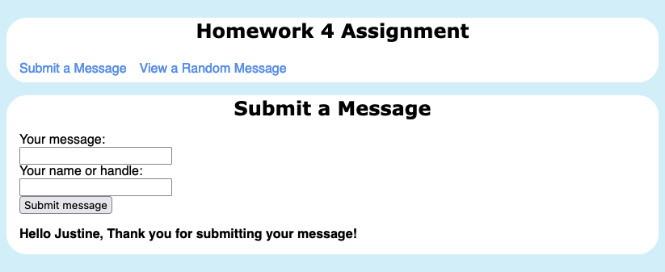
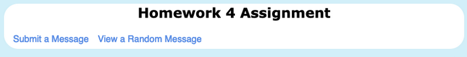
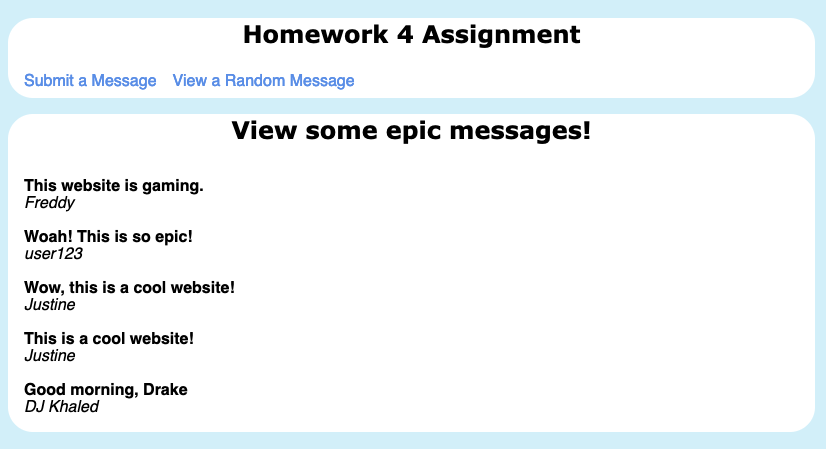

from flask import Flask, g, render_template, request
import sqlite3Task: Develop and launch a Flask app that allows for message submissions and an option to view them.
Before starting, I had to import the following libraries in order to complete this assignment:
Next, create and launch the Flask app using this.
app = Flask(__name__)Here is the GitHub Repository for this: GitHub
Now you are ready to start building your website!
1. Enable submissions
As per the instructions, we are asked to create a submit template with three user inteface elements:
- A text box for submitting a message.
- A textbox for submitting the name of the user.
- A “submit” button.
I wrote the following code in the submit.html file first and I will explain as follows:
{% extends 'base.html' %}
{% block header %}
<h1>{% block title %}Submit a Message{% endblock %}</h1>
{% endblock %}
{% block content %}
<form method="post">
<label for="message">Your message:</label>
<br>
<input type="text" name="message" id="message">
<br>
<label for="name">Your name or handle:</label>
<br>
<input type="text" name="name" id="name">
<br>
<input type="submit" value="Submit message">
</form>
{% if (name) and (message) %}
<br>
<b>Hello {{name}}, Thank you for submitting your message! </b>
{% else %}
<b> Please submit all entries </b>
{% endif %}
{% endblock %}Explanation:
{% extends 'base.html' %}- This allows for an extension from the ‘base.html’ file and replaces the templates with the content on this page but still maintaining the navigation bar on top.<form method="post">Section - This block of content contains the necessary code in order to meet the submission requirements.- The message allows for a text input from the user which creates a box. This is the same idea for the getting the name.
- ‘Submit message’ - This is the submission button.
- The rest of the code simply outputs a message that thanks the user
{name}for their input.
Before adding this to the app.py, we must build a SQL database and insertion function to store the messages.
Step 1b: Build get_message_db()
The purpose of this function allows for the creation of the message database. In order to build this, we must first check if the message table exists within the message_db.sqlite. We check this by writing a SQL query as so:
cursor.execute("CREATE TABLE IF NOT EXISTS messages (handle TEXT, message TEXT);")We check if there is a database called message_db in the g attribute of the app. Then once there is confirmation, then we do not need to connect one. If there is, then that is when we are going to connect a new database.
I wrote the following code to demonstrate this (which also includes the query):
def get_message_db():
# purpose: to handle a database full of messages
if 'db' not in g:
g.message_db = sqlite3.connect('message_db.sqlite')
conn = g.message_db
cursor = conn.cursor()
# creating the table if it does not exist
cursor.execute("CREATE TABLE IF NOT EXISTS messages (handle TEXT, message TEXT);")
return g.message_dbNow you are done writing the get_message_db() function.
Step 1b: Build `insert_message(request)
This function handles inserting a user message into the database.
Recall that we specified the message and handle objects in the submit.html file. We are going to retrieve those with the request function. We are going to access them with the request.form["message/name"] method.
This is how I built this function:
def insert_message(request):
# extracting the message and handle from the request
message = request.form["message"]
handle = request.form["name"]
db = get_message_db()
error = None # keeping track of empty messages
if error is None:
db.execute("INSERT INTO messages (handle, message) VALUES (?,?)", (handle, message)) # query to add the messages to the db
db.commit()
db.close()
return message, handleFinally, we are ready to build the submit app route.
2. Create the submit app route on app.py.
Next, we are going to interact with the submit function on the app.py.
In the app.py, this houses all the url routes to different pages in your website. I wrote the following code in order to do this.
@app.route('/send-message/', methods=['POST', 'GET'])
def send_message():
if request.method == 'GET':
return render_template('submit.html')
else:
try:
insert_message(request) # running insert message
return render_template('submit.html', name=request.form['name'], message=request.form['message']) # returns submit html with the successful submission
except:
return render_template('submit.html') Explanation:
@app.route('/send-messge/')- This produces the URL extension so that we can access the submission page.send_message()- This function handles the SQL database that stores the messages.insert_message(request)- This calls the function that inserts the message into the SQL database.render_template('submit.html')- This calls the template to be shown on the screen when this URL/page is being accesssed. Here, it will show what we wrote for the submissions category.
If you run the website, this is what it looks like!

3. View a Random Message
We are tasked to build a way to view the messages on the navigation.
Before we start, we first make View a Random Message an option on the navigation bar.
<li><a href="{{ url_for('view') }}">View a Random Message</a></li>
Then, we are going to make a function random_messages(n) that helps show the submissions (name and handle) to the user.
- This communicates with the
get_message_dbfunction, meaning that it communicates with the SQL database that we created earlier.
def random_messages(n):
"""
Returns random messages
"""
db = get_message_db()
cursor = db.cursor()
cursor.execute("SELECT message, handle FROM messages ORDER BY RANDOM() LIMIT (?)", (n,))
messages = cursor.fetchall()
db.close()
return messages Explanation:
- SQL query
cursor.execute("SELECT message, handle FROM messages ORDER BY RANDOM() LIMIT (?)", (n,))- This selects the message and handle value from the tablemessagesin a random order and only takes 5 of them at a single time.
Now, we are going to create a view.html file that creates another page to view the messages.
Similar to the submit.html file, this will create extend the base.html we made so that the navigation bar still exists.
{% extends 'base.html' %}
{% block header %}
<h1>{% block title %}View some epic messages!{% endblock %}</h1>
{% endblock %}
{% block content %}
{% for content in message_list %}
<br>
<b>{{content.0}}</b>
<br>
<i>{{content.1}}</i>
<br>
{% endfor %}
{% endblock %}Explanation:
- The
{% for content in message_list %}loop will go through the messages, then select and display them randomly on the screen.
After we created this, we will go back to the app.py so that we can build a URL route to access this page.
@app.route('/view/')
def view():
limit = 5
mylist=random_messages(limit) # runs the random amt of messages
return render_template('view.html', message_list = mylist)Explanation:
limit = 5- This limits the amount of messages that the function will output to 5.- Similar process to the previous routes, it will call the function and render the template that we created.
After that is complete, this is what your website should look like:

And that’s it for the tutorial! Congratulations, you have a complete website!
Takeaways:
- One of the things that was most challenging was understanding how the app.routes and the templates connected to one another. I kept running into
Internal server errorsall the time when trying to connect them. After reading a few tutorials, I managed to do them. - Web dev is fun! I really like playing around with the design and learning the back end work was super neat! :D